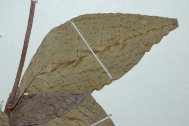
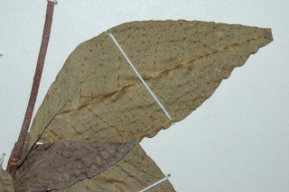

Trees up to 5 m tall.
5 ಮೀ. ಎತ್ತರದವರೆಗೆ ಬೆಳೆಯುವ ಮರಗಳು.
5 മീറ്റര് വരെ ഉയരമുളള മരങ്ങള്.
மரங்கள் 5 மீ. உயரம் வரை வளரக்கூடியது
Branchlets subterete, glabrous.
ಕಿರುಕೊಂಬೆಗಳು ಉಪ- ದುಂಡಾಗಿದ್ದು ರೋಮರಹಿತವಾಗಿರುತ್ತವೆ.
ഏതാണ്ട് ഉരുണ്ടിരിക്കുന്ന, അരോമിലമായ ഉപശാഖകള്.
சிறிய நுனிக்கிளைகள் குறுக்குவெட்டுத் தோற்றத்தில் வளையமானது, லெண்டிசெல் உடையது, உரோமங்களற்றது.
Whitish sap from the cut end of leaves and twigs.
ಕತ್ತರಿಸಿದಾಗ ಎಲೆಗಳು ಮತ್ತು ಕುಡಿಕೊಂಬೆಗಳ ತುದಿಯಿಂದ ಬೆಳ್ಳಗಿನ ಸಸ್ಯ ರಸ ಒಸರುತ್ತವೆ
തണ്ടിന്റേയും ഇലയുടേയും മുറിവില്ക്കൂടി വെളുത്തസ്രവം പുറത്തുവരുന്നു.
இலை மற்றும் தண்டின் வெட்டிய பகுதியில் வெண்மை நிறமான திரவத்தை சுரக்ககூடியது.
Leaves simple, alternate or subopposite, sometimes spiral; petiole 0.2-0.3 cm long, lamina 4-9.5 x1.6-4.2 cm, elliptic-rhomboid, apex acute with obtuse or retuse tip, base acute, margin entire, glabrous; secondary_nerves ca. 9 pairs; tertiary_nerves admedially_ramified.
ಎಲೆಗಳು ಸರಳವಾಗಿದ್ದು,ಪರ್ಯಾಯ ಅಥವಾ ಉಪ-ಅಭಿಮುಖಿಗಳಾಗಿದ್ದುಕೆಲವು ವೇಳೆ ಸುತ್ತು ಜೋಡನಾ ವ್ಯವಸ್ಥೆಯಲ್ಲಿರುತ್ತವೆ;ತೊಟ್ಟುಗಳು 0.2 – 0.3 ಸೆಂ.ಮೀ.ವರೆಗಿನ ಉದ್ದವನ್ನು ಹೊಂದಿರುತ್ತವೆ;ಪತ್ರಗಳು 4 - 9.5 X 1.6 –4.2 ಸೆಂ ಮೀ. ಗಾತ್ರ, ಅಂಡವೃತ್ತ-ವಜ್ರಾಕೃತಿಯ ಆಕಾರ, ತುದಿ ಚೂಪಾಗಿದ್ದು ಚೂಪಲ್ಲದ ಅಥವಾ ದುಂಡಾದ ತುದಿಯಲ್ಲಿ ಕಚ್ಚುಳ್ಳ ಅಗ್ರವನ್ನು ಹೊಂದಿರುತ್ತವೆ;ಬುಡ ಚೂಪಾಗಿರುತ್ತದೆ;ಅಂಚು ನಯವಾಗಿದ್ದು ರೋಮರಹಿತವಾಗಿರುತ್ತವೆ; ಎರಡನೇ ದರ್ಜೆಯ ನಾಳಗಳು ಅಂದಾಜು 9 ಜೋಡಿಗಳಿರುತ್ತವೆ;ಮೂರನೇ ದರ್ಜೆಯ ನಾಳಗಳ ಕವಲುಗಳು ಎಲೆಯ ಅಕ್ಷದ ದಿಕ್ಕಿನಲ್ಲಿರುತ್ತವೆ.
ലഘുവായ ഇലകള്, ഏകാന്തരമോ ഉപസമ്മുഖമോ ചിലപ്പോള് സര്പ്പിളമായും അടുക്കിയിരിക്കുന്നു; ഇലഞെട്ടിന് 0.2 സെ.മീ മുതല് 0.3 സെ.മീ വരെ നീളം; പത്രഫലകത്തിന് 4 സെ.മീ മുതല് 9.5 സെ.മീ വരെ നീളവും 1.6 സെ.മീ മുതല് 4.2 സെ.മീ വരെ വീതിയും, ദീര്ഘവൃത്താകാര-ദീര്ഘചതുരാകൃതിയുമാണ് പത്രാഗ്രം ഉപകോണാകാരാമോ ഇടയിലൊരു ചെറുവിടവുള്ള വൃത്താകാരമോ ആയ നിശിതാഗ്രമാണ്, പത്രാധാരം നിശിതമാണ്, അരികുകള് അവിഭജിതം, അരോമിലം; ഏതാണ്ട് 9 ജോഡി ദ്വിതീയ ഞരമ്പുകള്; ത്രിതീയ ഞരമ്പുകള് അഡ്മിഡിയലി റാമിഫൈഡ് രീതിയിലാണ്.
இலைகள் தனித்தவை, மாற்றுஅடுக்கமானவை, அல்லது எதிரடுக்கம் போன்றவை, சிலசமயங்களில் சுழல் போன்று அமைந்தவை; இலைக்காம்பு 0.2-0.3 செ.மீ. நீளமானது; இலை அலகு 4-9.5 X 1.6-4.2 செ.மீ., நீள்வட்ட-சாய்சதுர வடிவானது, அலகின் நுனி கூரியது மற்றும் மழுங்கியவை அல்லது சிறு பிளவுடையது (ரெட்யுஸ்), அலகின் தளம் கூரியது, அலகின் விளிம்பு முழுமையானது, கீழ்பரப்பு உரோமங்களற்றது; இரண்டாம் நிலை நரம்புகள் 9 ஜோடிகளுடையது; மூன்றாம் நிலை நரம்புகள் அட்மீடியல்லி ராமிபைடு.
Flowers greenish yellow, unisexual, monoecious; male flowers in slender racemes; female flowers solitary, axillary or fascicled.
ಹೂಗಳು ಹಸಿರು ಮಿಶ್ರಿತ ಹಳದಿ ಬಣ್ಣ ಹೊಂದಿದ್ದು ಏಕಲಿಂಗಿಗಳಾಗಿರುತ್ತವೆ ಮತ್ತು ಗಂಡು ಮತ್ತು ಹೆಣ್ಣು ಹೂಗಳು ಒಂದೇ ಸಸ್ಯದಲ್ಲಿರುತ್ತವೆ; ಗಂಡು ಹೂಗಳು ತುದಿಯಲ್ಲಿನ ತೆಳುವಾದ ಮಧ್ಯಾಭಿಸರ ಪುಷ್ಪಮಂಜರಿಯಲ್ಲಿರುತ್ತವೆ; ಹೆಣ್ಣು ಹೂಗಳು ಅಕ್ಷಾಕಂಕುಳಿನಲ್ಲಿ ಒಂಟಿಯಾಗಿರುತ್ತವೆ ಅಥವಾ ಗುಚ್ಛಗಳಲ್ಲಿರುತ್ತವೆ.
പച്ചകലര്ന്ന മഞ്ഞ നിറത്തിലുളള പൂക്കള് ഏകലിംഗികളാണ്, മൊണീഷ്യസും; ആണ്പൂക്കള് നേര്ത്ത റസീമുകളില് ഉണ്ടാകുന്നു; പെണ്പൂക്കള് കക്ഷങ്ങളില് ഒറ്റയായോ കൂട്ടമായോ ഉണ്ടാകുന്നു.
மலர்கள் பச்சை கலந்த மஞ்சள் நிறமானவை, ஓர்பாலானவை, ஓரகம் கொண்டவை; ஆண்மலர்கள் மெல்லிய ரெசீம்; பெண்மலர்கள் தனித்தவை, இலைக்கோணங்களில் காணப்படும் அல்லது தொகுப்பானது.
Capsule, shallow lobed, ca. 1 cm long; fruiting_calyx_lobes spreading; seeds 3.
ಸಂಪುಟ ಫಲಗಳು ಆಳವಿಲ್ಲದ ಹಾಲೆ ಸಮೇತವಿದ್ದು ಅಂದಾಜು 1 ಸೆಂ ಮೀ.ಉದ್ದವಿರುತ್ತವೆ ; ಕಾಯಿಗಳ ಪುಷ್ಪ ಪಾತ್ರೆಯ ದಳಗಳು ಹರಡಿಕೊಂಡಿರುತ್ತವೆ; ಬೀಜಗಳು 3.
3 വിത്തുകളുളള കായ, ഏതാണ്ട് 1 സെ.മീ നീളമുളള, ചെറുതായി കര്ണ്ണിതമായ കാപ്സ്യൂള് ആണ്; കായോട് ചേര്ന്നുളള ബാഹ്യദളങ്ങള് വിടര്ന്നു നില്ക്കുന്നവയാണ്.
வெடிகனி (கேப்சூல்), சிறு பிளவுகளுடையது, 1 செ.மீ. நீளமானது; புல்லி இதழ்கள் கனியில் நிரந்தரமானவை, விரிந்தவை; விதைகள் மூன்று கொண்டது.
 
